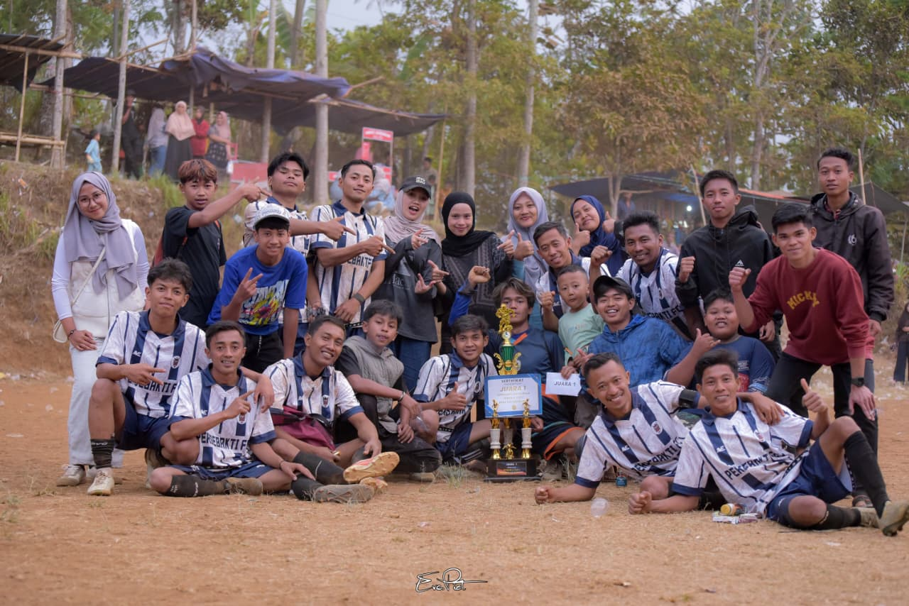
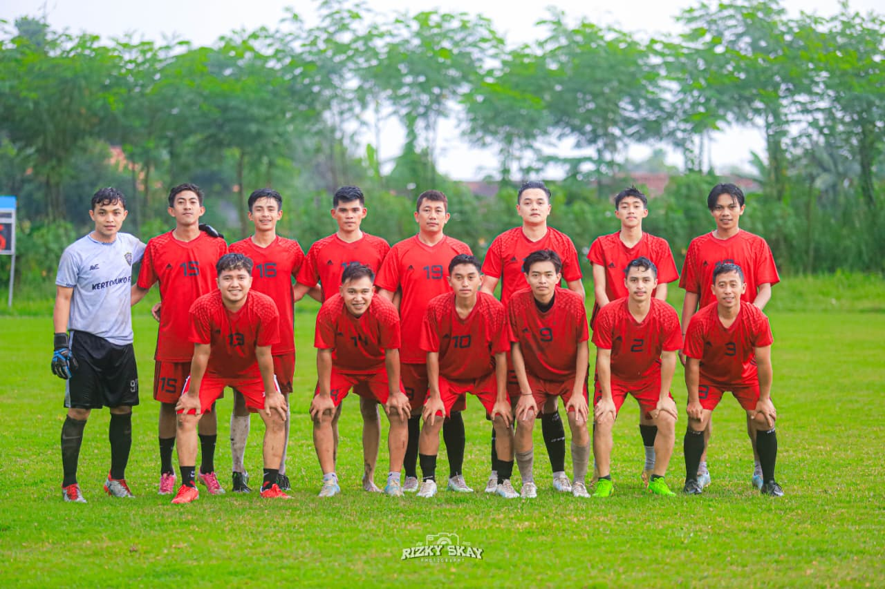
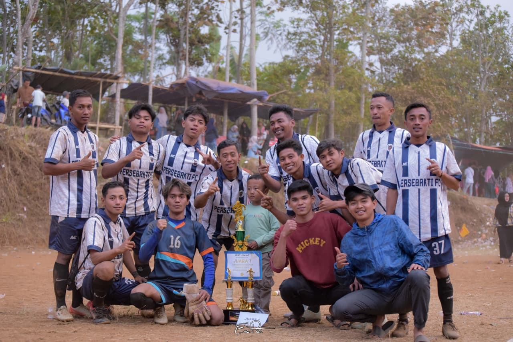

KEGIATAN TIM
Semangat Latihan Krucil United
Kegiatan latihan menjadi tempat membangun kekompakan dan kerja sama tim.
ONE TEAM. ONE SPIRIT.
FOR A BETTER FUTURE.
DESA KRUCIL, KECAMATAN
KRUCIL,
KABUPATEN PROBOLINGGO, JAWA TIMUR
Krucil United adalah klub sepak bola yang tumbuh dari semangat persaudaraan, kebersamaan, dan kecintaan terhadap olahraga, khususnya sepak bola. Berasal dari Desa Krucil, Kecamatan Krucil, Kabupaten Probolinggo, Jawa Timur.
Lebih dari sekadar klub, kami adalah keluarga yang berjuang bersama di lapangan untuk meraih mimpi dan mengharumkan nama desa kami.
NILAI KAMIDesa Krucil, Kecamatan Krucil, Kabupaten Probolinggo, Jawa Timur
Sportivitas, Persaudaraan, Kebersamaan
Mengembangkan bakat, meraih prestasi, mengharumkan nama desa.
“Satu Tim, Satu Tujuan, Krucil United”

BERSAMA KITA LEBIH KUAT
Dengan semangat juang dan kerja sama tim, Krucil United siap melangkah lebih jauh menuju prestasi yang lebih tinggi.
GABUNG BERSAMA KAMIInformasi pertandingan dan kegiatan Krucil United akan diumumkan di sini.
Kegiatan latihan menjadi tempat membangun kekompakan dan kerja sama tim.
Dukungan dan kebersamaan menjadi kekuatan besar bagi Krucil United.
Terus berkembang dan berjuang untuk membawa nama Krucil semakin dikenal.
* Konten di atas merupakan contoh tampilan. Ganti dengan berita dan foto asli klub.



Punya pertanyaan, ingin bergabung, atau ingin bekerja sama? Hubungi pengurus klub melalui kontak resmi yang akan dicantumkan di sini.
Desa Krucil, Kecamatan Krucil, Kabupaten Probolinggo, Jawa Timur